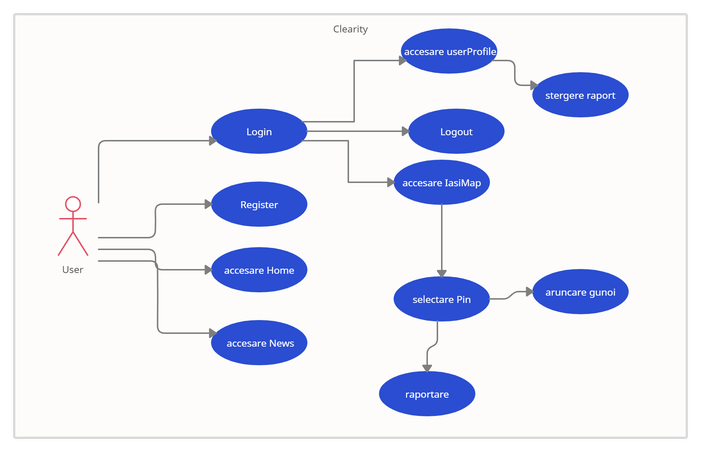
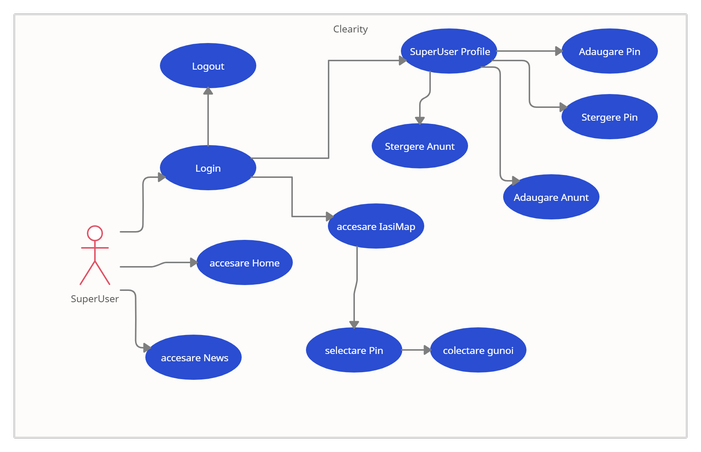
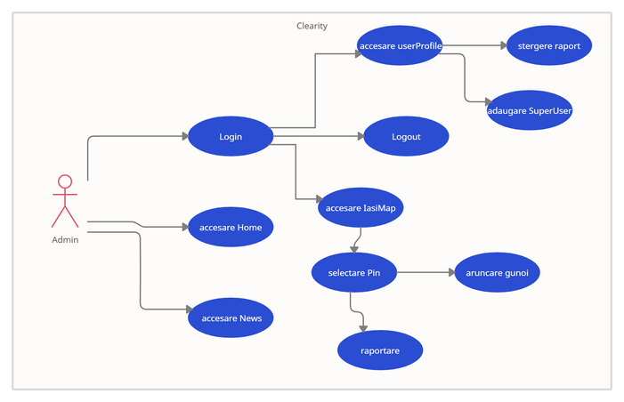
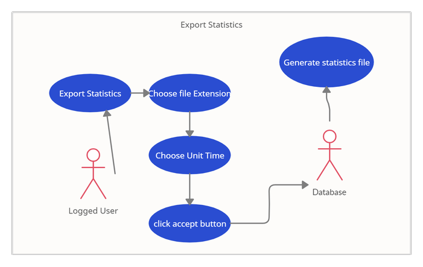
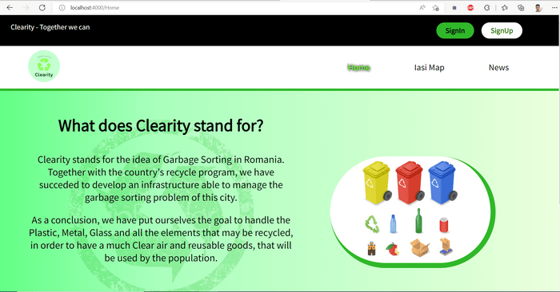
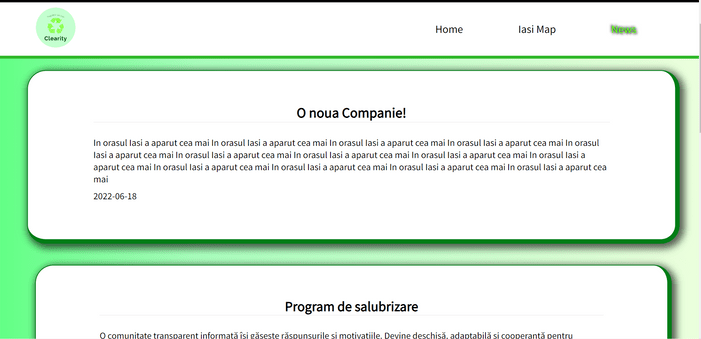
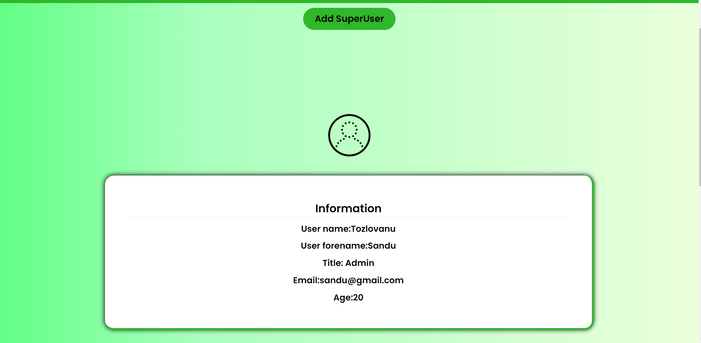
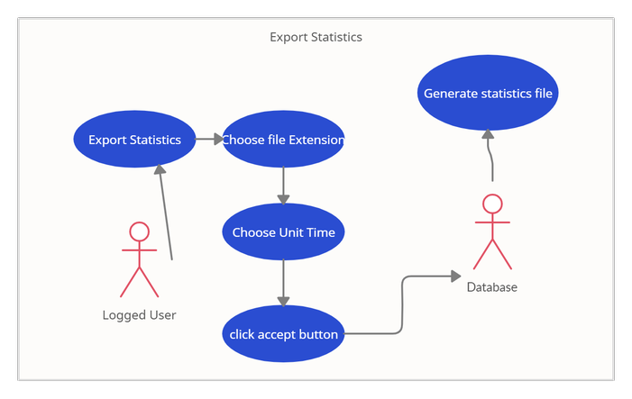

Diagrame UseCase
User
SuperUser
Admin
Statistics Report
Logged users have Get Statistics button in the header:

Garbage Web Monitor, prescurtata GaMon este o aplicatie Web care furnizeaza utilizatorilor informatie despre situatia deseurilor din orasul Iasi, oferind diferite date precum cantitatea de materii reciclate, starea generala ecologica in domeniul deseurilor, precum si diferite instrumente de raport a nerespectarii normelor de stocare a deseurilor, indicarea locurilor unde au fost stocate cantitati mari de gunoi,cu scopul congestiunii acestuia.
Scopul aplicatiei Garbage Web Monitor este de a oferi utilizatorilor posibilitatea de a se informa si a contribui la procesul de colectare, sortare si reciclare a deseurilor din localitatea sa, facilitand aceasta prin diferite campanii de informare, instrumente de control. Astfel, fiecare utilizator GaMon in parte face strazile mai curate, iar mediul inconjurator mai putin poluat.
La realizarea aplicatiei s-au respectat conventiile de utilizare HTML5 si CSS3 si Javascript, iar codul va fi verificat cu ajutorul validatoarelor online Validator W3 Org si CSS Lint.
Pentru partea de frontend a aplicatiei se va utiliza HTML5, CSS3, Javascript.
Pentru partea de backend a aplicatiei se va utiliza Node.js.
Pentru baza de date se va utiliza MongoDB (mongoose).
Această pagină ofera utilizatorilor informatii generale despre acest site, facandu-i cunostinta utilizatorui cu scopul aplicatiei si menirea sa.
Utilizatorii care inca nu s-au si-au facut un cont pe acest website, au posibilitatea de a-si crea unul. Aceasta o pot face pe pagina de Registrare, introducand urmatoarele date: username, parola, numele, prenumele si varsta. Va fi necesar ca parola sa fie reintrodusa si in urmatorul camp pentru confirmare. In campul de varsta este permis doar cifre, toate campurile trebuiesc completate obligatoriu, username-ul nu poate fi mai scurt de 6 caractere, iar parola trebuie sa contina atat litere cat si cifre si sa nu fie mai scurta de 6 caractere. Numele si prenumele trebuie sa fie alcatuite doar din litere. Dupa introducerea datelor, utilizatorul trebuie sa dea click peste butonul de register, unde datele vor fi verificate, si in caz de succes, un cont nou va fi creat, iar utilizatorul va fi trimis pe pagina de Home. Poate fi accesata prin 3 metode:
Vizitatorii website-ului au posibilitatea de a se loga pe site si a deveni membru Clearity. Pentru aceasta, vizitatorii trebuie sa introduca username-ul si parola sa. Datele utilizatorului sunt verificate in baza de date, si in caz de succes, utilizatorul ajunge pe pagina sa de profil. In caz contrar, utilizatorul este rugat sa introduca username-ul si parola corecta. Poate fi accesata prin 3 metode:
Utilizatorii vor putea intra pe pagina de anunturi unde vor putea urmari ultimele stiri la subiectul Ecologiei. Astfel, membrii website-ului vor fi informati despre posibile actiuni de voluntariat, campanii de curatenie, noutati din domeniul starii ecologice romane si a localitatii Iasi (Decizii are ministerului Ecologiei, evenimente, accidente ecologice etc.) Aceste stiri vor fi generate in special de catre organizatia ce se ocupa de gestiunea si reciclarea deseurilor. Poate fi accesata accesand butonul news din header, sau accesand adresa /News.
Această pagină e compusa dintr-o harta a orasului Iasi, obtinuta cu ajutorului Leaflet OpenStreetMap, oferind urmatoarele functionalitati:
Aceasta pagina permite gestionarea datelor personale si a raporturilor. Informatiile din aceasta pagina sunt personale, si sunt generate individual pentru fiecare user. La fel, utilizatorul poate observa rapoartele facute de el ,in tab-ul My Reports, unde este afisata informatia precum locul raportat, corpul raportului, timpul cand a fost facut raportul. Aditional, user-ul poate accesa butonul de Delete in incinta fiecarui raport, pentru a-l sterge.
Accesarea acestei pagini poate fi realizata doar dupa procesul de logare, si accesare a imaginii de Profil langa butonul de Logout.
Aceasta pagina ofera toate functionalitatile profilului de user simplu. Aditional, adminul poate accesa butonul de "Add SuperUser" unde poate crea un superUser nou. In formular, adminul completeaza datele precum adresa companiei, parola, email-ul denumirea companiei si numarul de contact al acesteia. La finisarea crearii unui cont nou, compania de salubrizare poate accesa contul propriu cu email-ul si parola setata de admin.
Aceasta pagina permite gestionarea datelor companiei si a noutatilor. Pagina poate fi accesata doar de un superUser ( companie de salubrizare cu ajutorul contului creat de admin). In pagina de profil a companiei de salubrizare sunt disponibile 4 functionalitati aditionale user-ului simplu:
Acesta se afla in partea de sus a fiecarei pagini, cu exceptia paginii de login register si profilePages. Acesta are urmatoarele butoane: SignIn,SignUp,Logout,Profile icon button si Get Statistics.
Pentru stocarea și managementul online al codului-sursă am folosit GitHub:
Repository-ul de pe GitHubFiecare membru al echipei a lucrat in timpul sprint-ului pe propriul sau branch, iar in la finalul sprint-ului, branch-urile erau integrate in branch-ul main.
Pentru gestiunea task-urilor si proiectarea unui Project Backlog a fost folosita aplicatia Trello. A fost folosita metodologia Scrum, Theodor Nae fiind scrum-master-ul. Product Backlog-ul initial a fost impartit in Sprint Backlogs, unde in fiecare sprint era executat, revizuit si integrat in aplicatie.
Trello WorkspaceLogged users have Get Statistics button in the header:
Serverul trasmite catre client toate datele necesare pentru a face request la server, astfel sunt trasmise asa zise "settings", deci aceste valori nu sunt vizibile pentru posibile atacuri cibernetice. Pentru a securiza aplicatia de Cross-Site Scripting, nu a fost folosit deloc innerHTML, iar input-urile pentru generarea dinamica a elementelor html, au fost folosite template-urile, valorile preluate din baza de date fiind injectate doar ca textContent